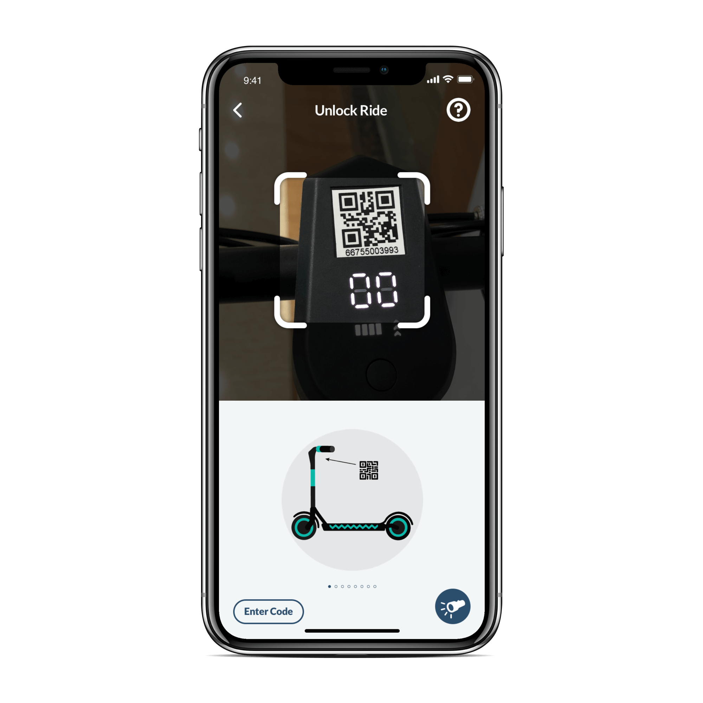
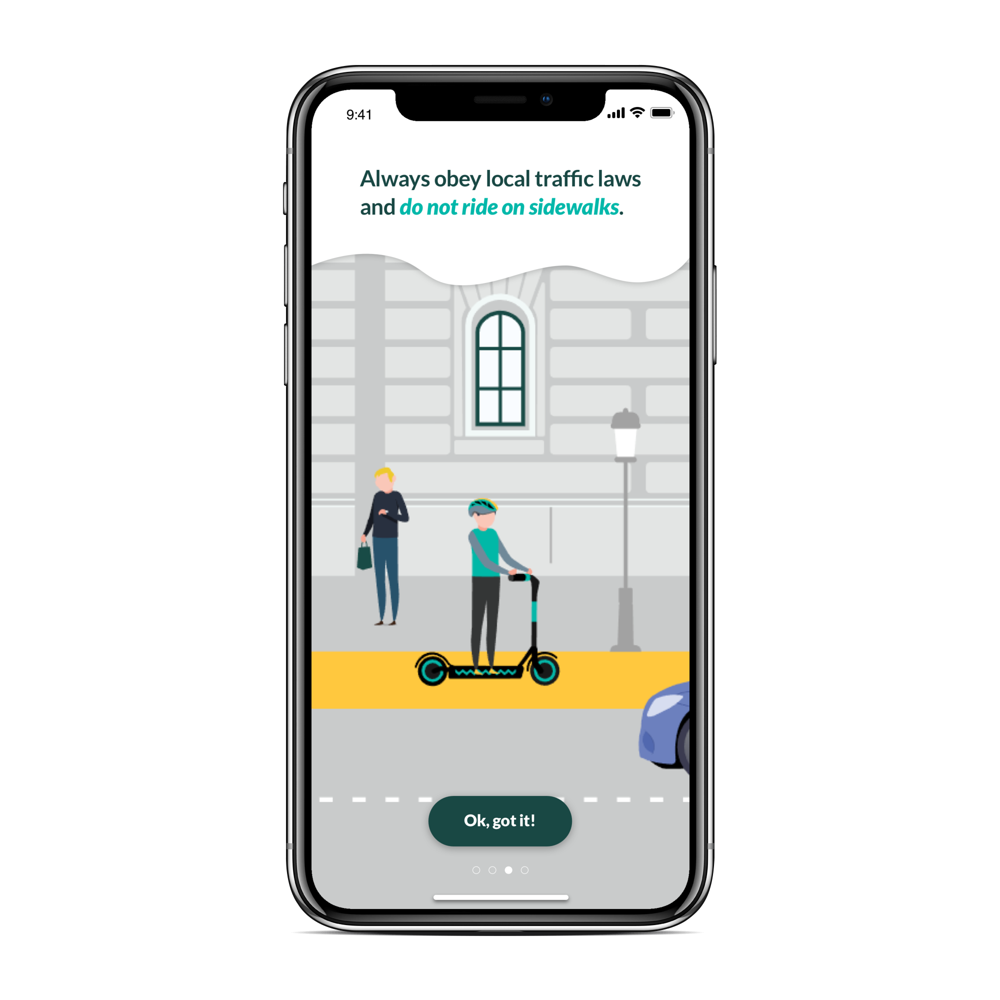
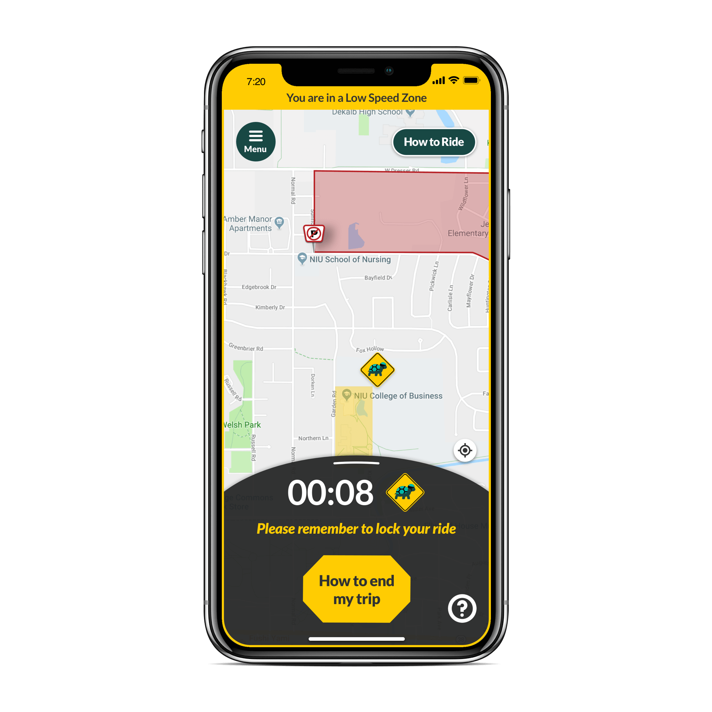
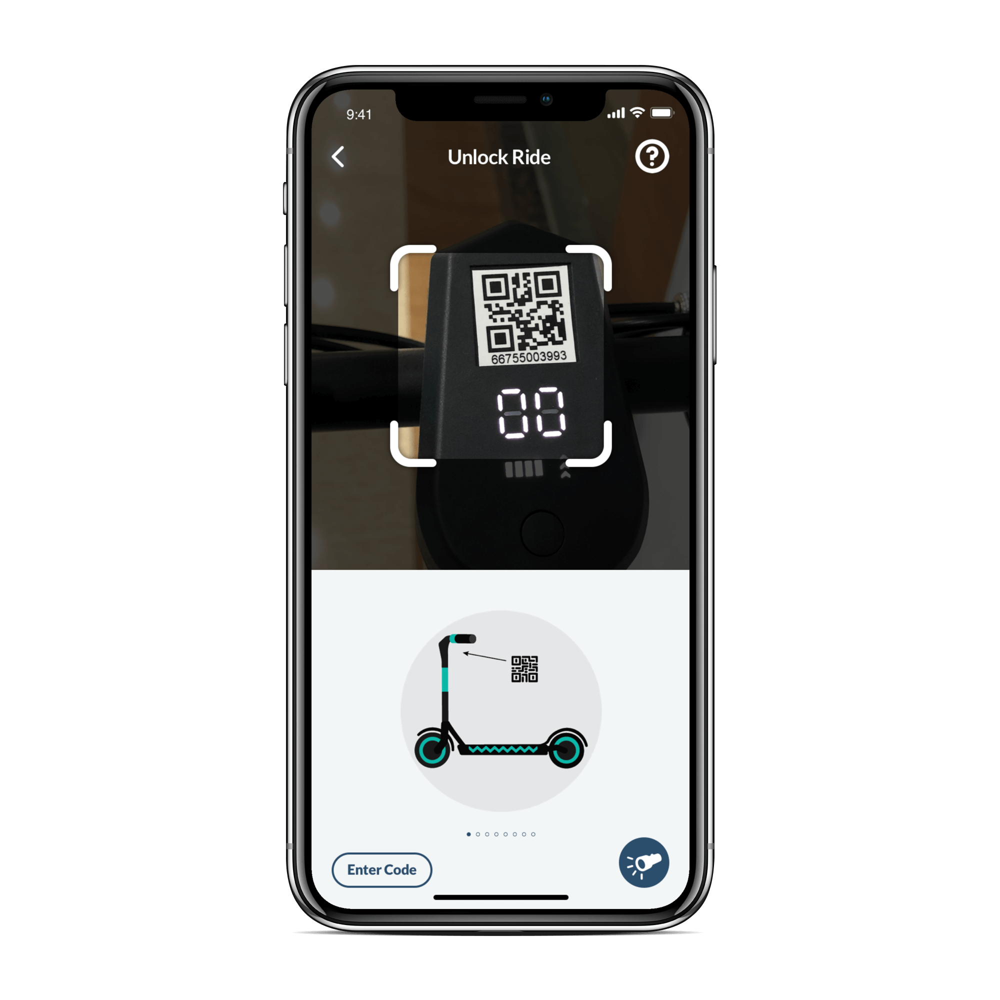
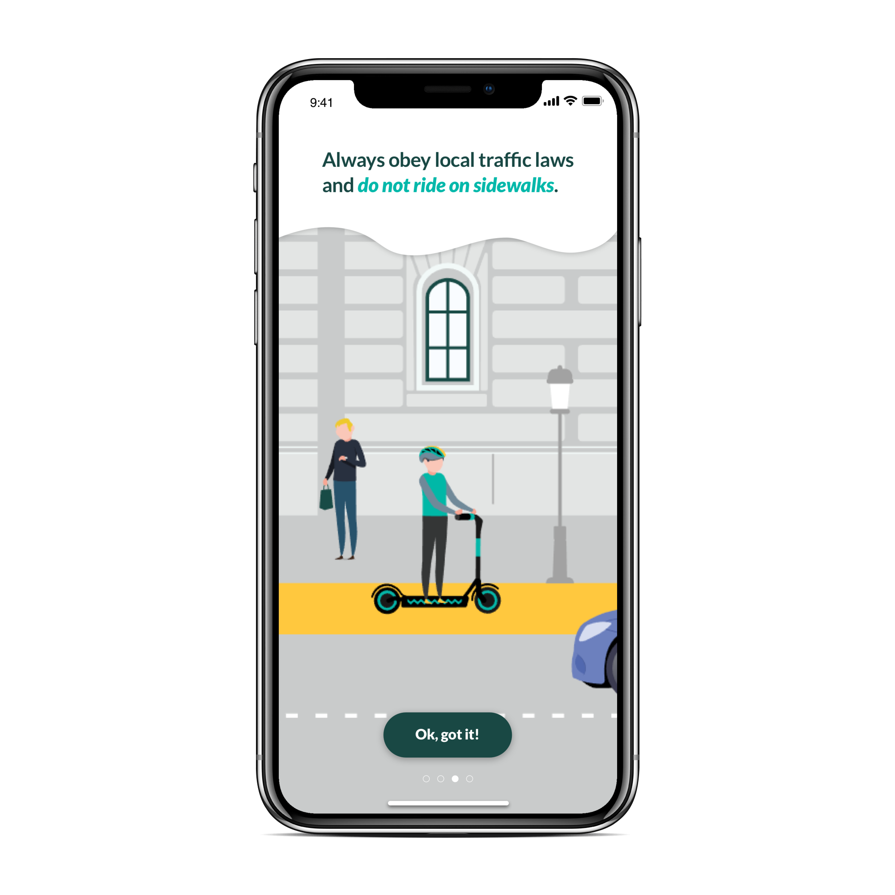
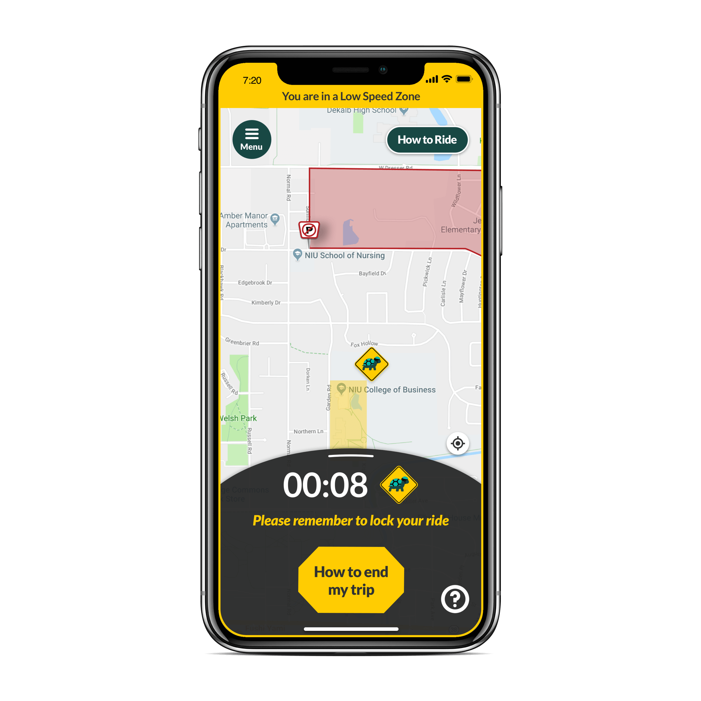
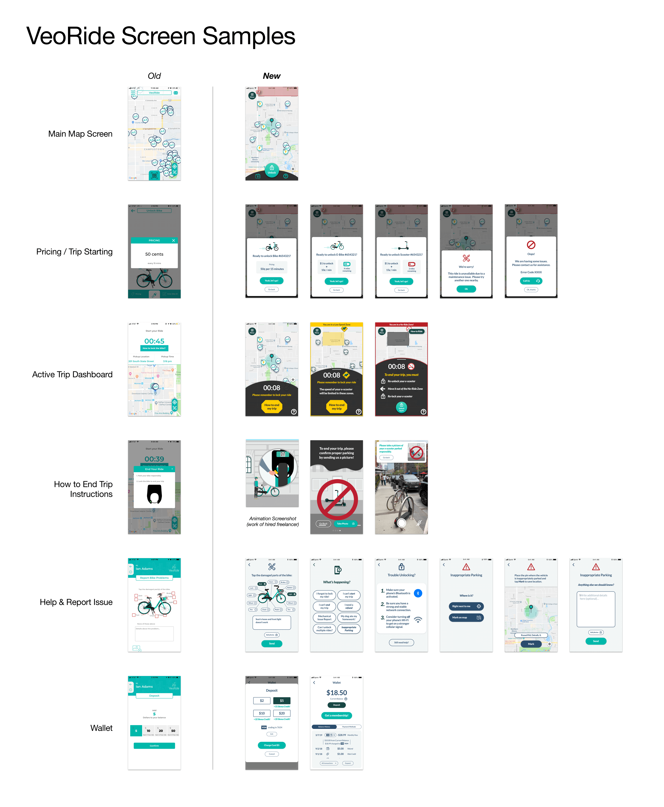

VeoRide
I most recently worked as the UX/UI Designer at an exciting mobility startup called VeoRide helping to revamp their mobile app and make the dockless micromobility experience more fun and beneficial for both riders and their communities. While the details of this work are protected by an NDA, I am happy to share broadly about what I worked on at VeoRide. These are the key things I learned from my time there (more detailed account of projects further down):
- Working closely and communicating effectively with a culturally diverse dev team is rewarding and refines my design process, ensuring clear understanding and precise, quality implementation.
- Working with hardware adds interest to a technology product, but can also hamper iterative improvement given stubborn technical challenges that are slow or nearly impossible to resolve.
- Testing and field research are always essential, but especially with hardware. Constant contact with field operations personnel helps with acquiring this priceless first-hand user feedback.
- An early-stage startup is exciting to work for, but inchoate branding, culture, and leadership can be challenging to function and progress within, even for a self-motivated professional.
 





I produced all screen samples in Sketch. VeoRide's graphic designer produced all icons and illustrations. The third screen features a screenshot from an instructional animation made by a freelancer.

Tap here to open more screen samples in a new tab
Mobile App Redesign (released 1/2019) and Ongoing Improvement
Fleet Technicians’ App Creation (Feb-Jun 2019)
Help & Info and Report Issue App Section Overhaul (Apr-May 2019)
Improved User Education During Trip Experience (Mar-Jul 2019)
Ongoing User Research
While I've enjoyed the experience and learned so much working at this vibrant, early-stage startup, I'm currently looking forward to a new opportunity for growth at a more established organization. I look forward to joining a full-scale product or UX team and collaborating with other designers. If you'd like to work together or simply have a conversation, please feel free to get in touch!
- Aesthetic overhaul in collaboration with graphic designer and illustrator within context of existing branding and color scheme
- Exhaustive inventorying and streamlining of essential app features and functions using user stories and flows
- Generated multiple ideas for redesigns using hand sketching and low fidelity wireframes in Balsamiq
- Used UsabilityHub for preference and navigation testing of different map screen redesign ideas
- Created more consistent and intuitive design system for elements throughout the app
- Handed off final designs in Sketch to dev team using Zeplin, ensuring proper formatting for both iOS and Android and downloadability of all icons and images
- Created simple video prototypes using Adobe XD and clickable prototypes using InVision, in addition to corresponding user flows, to help developers precisely understand how a feature should behave for users
- Used Jira backlog and daily stand-up meetings with dev team to keep track of work, ensure completion of essential features and bug fixes, and help with planning of feature additions
- Developed an understanding of the rigors and challenges of implementing a native app, particularly when also contending with unpredictable hardware complexities, IoT malfunctions, and accompanying backend engineering demands
- Learned to design for and around these technical issues wherever they affected users
Fleet Technicians’ App Creation (Feb-Jun 2019)
- Based on field research and interviews with fleet technicians and coordinators
- Thorough analysis and cataloguing of fleet technician user stories
- Research findings synthesized into user flows and an initial MVP version with key features determined in collaboration with operations leadership
- App dramatically improved efficiency of field operations and tracking of fleet technicians' work
Help & Info and Report Issue App Section Overhaul (Apr-May 2019)
- Teamed up with Customer Service Lead to find out how to reduce call volume and more quickly direct users to help with most common issues
- Overhaul significantly reduced call and email volume
- Faster reporting and resolution of inappropriate vehicle parking and maintenance issues
- Click here to see an InVision prototype of these changes
Improved User Education During Trip Experience (Mar-Jul 2019)
- Redesigned Active Trip Dashboard to show different states based on location in particular riding and parking zones established by city governments
- Reduced use of frequently ignored pop-up notifications
- Hired freelance animator to produce detailed illustrations of safe and responsible riding and parking behavior to add to users' first trip-starting process
- Click here to see an example of one of these animations (reminding to not block pedestrians). And one more example here (showing how to lock a bike)
Ongoing User Research
- Visited nearby market to experience product first-hand and talk in-person with users (October 2018)
- Series of surveys to local markets to get a sense of user behavior, preferences, and desired improvements to app and vehicles (October-November 2018)
- Survey of largest markets to determine what drives ridership (February-April 2019)
- Constant monitoring of social media mentions and app reviews to gauge sentiment and improve service
- Regular contact with local market managers to learn of opportunities for app and overall service improvement
- Always distilled research findings into easily digestible reports including charts and written summaries. Feedback shared company-wide, in particular for the benefit of operations and sales teams as well as company leadership
- Consistently translated user research into concrete app improvements that improved functionality and understandability for users and addressed needs of other stakeholders like city governments
- And finally, here is a quick blog post I wrote last year to promote safe and fun winter biking! (Illustration and web development by Remy Thomas).
While I've enjoyed the experience and learned so much working at this vibrant, early-stage startup, I'm currently looking forward to a new opportunity for growth at a more established organization. I look forward to joining a full-scale product or UX team and collaborating with other designers. If you'd like to work together or simply have a conversation, please feel free to get in touch!